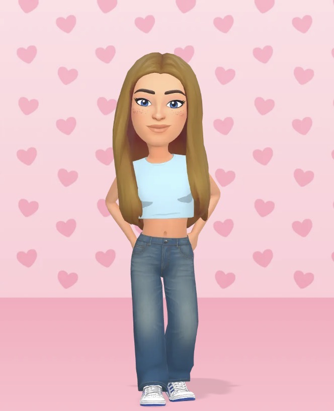

Personal Facts
- I am 18 years old.
- I grew up in Perth but have moved to Dundee for University
- I have chosen to study Computer Science because it was my favourite subject throughout school and offers lots of job opportunities.
- I have a rare condition called Sectoral Heterochromia, meaning my eyes are blue but one of my eyes has a large brown section in it.
Work Experience
- 2022 - 2023: Waitress at MacMillian charity-run Cafe
- Summer 2022: Catering Assistant at the Pizza Pitch
- 2023 - 2024: Catering Assistant at Scone Palace
- 2024 - Current: Food & Beverage Assistant at Murrayshall
Education
Nat5 Qualifications
- Biology - B
- Chemistry - B
- Computer Science - A
- English - A
- History - A
- Maths - B
- Modern Studies - B
Higher Qualifications
- Admin & IT - A
- Biology - B
- Computer Science - B
- English - A
- History - C
- Maths - B
- RMPS - C
Advanced Higher Qualifications
- Computer Science - C
Hobbies
Dance
- Ballet
- Tap
- Jazz
- Contemporary
Other
- Listening to Music
- Reading
- Colouring
- Shopping
